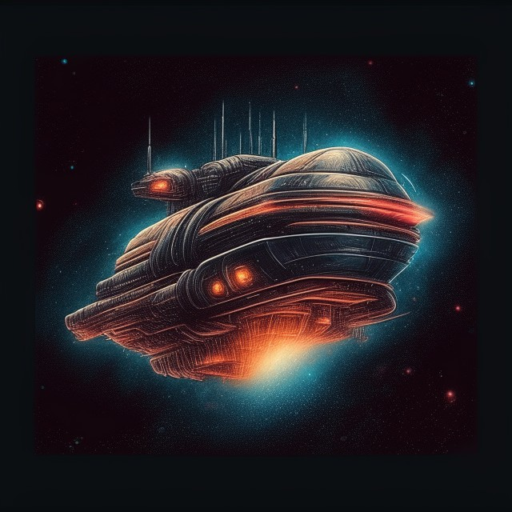

My Sci-Fi universe
Space Game or Space Game: Nakara
Last semester in Cory's Game Development class I made a game!
(Super creative naming statigies...I know.)

Space Game is a narrative space opera made in Twine.
You explore the solar system, Nakara, and uncover the secrets of its history.
You can find Space Game on my itch! SpaceWalker11
The Genesys Experiments
The first 12 pages of a Cyberpunk book I have in development.
It is set in the same universe as Space Game, but instead of being in Nakara, it is in the Milky Way.
The story follows a character named Nano who struggles to navigate the last major city on Earth.
If there are any issues with downloads or you are interested in reading any of the above
You can contact me through steam, discord, or email!
I always love new feedback!
Home Page
Spooky Stuff